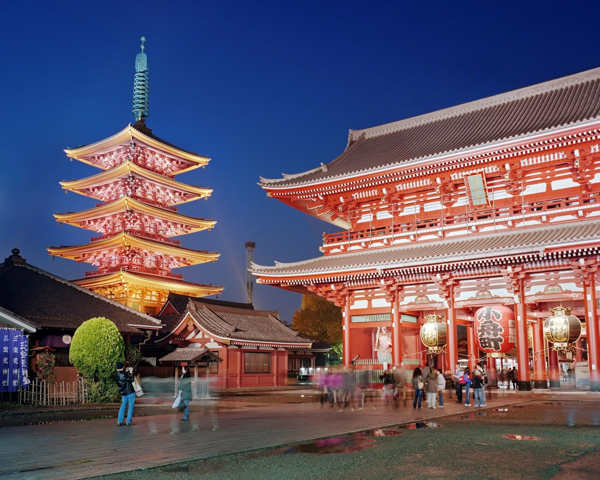
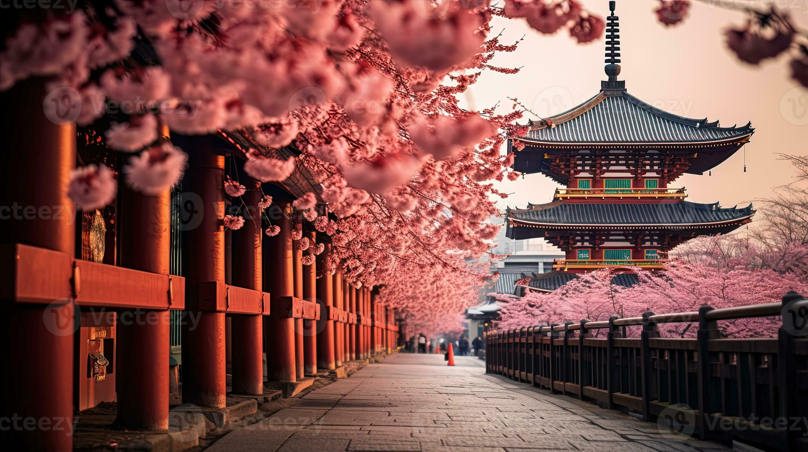
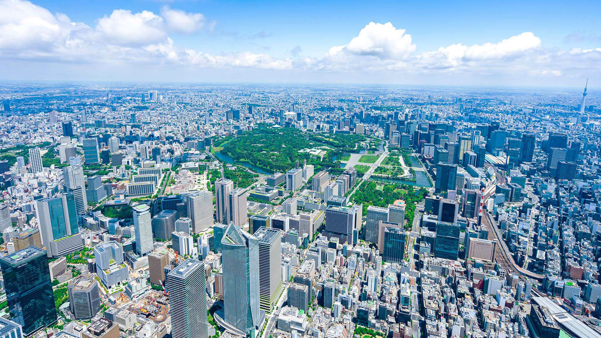
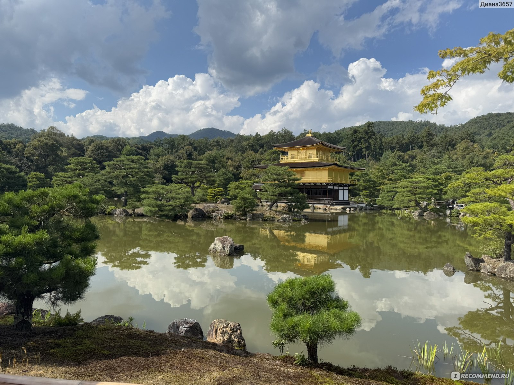
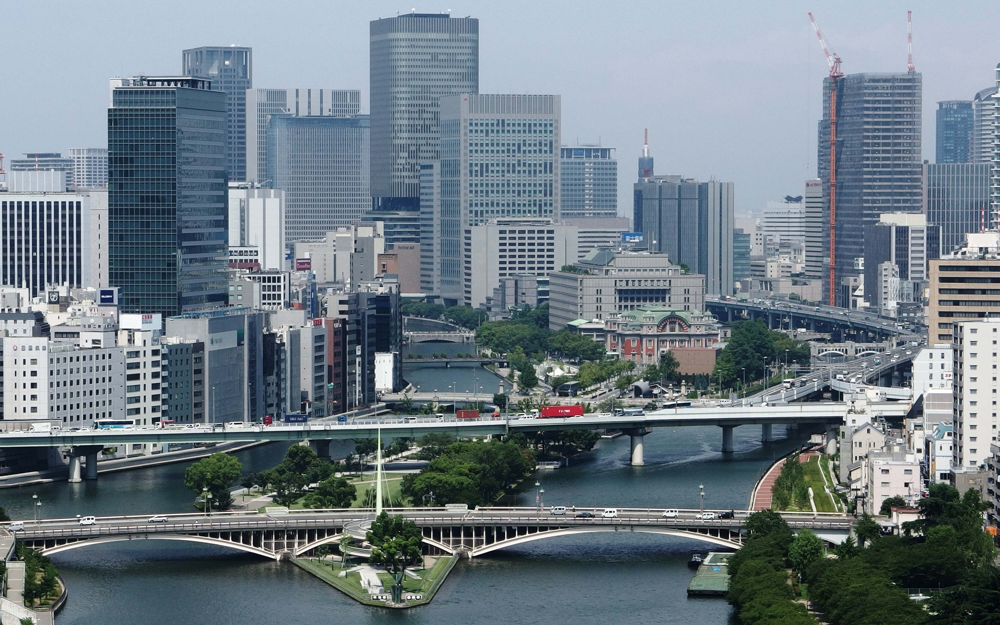
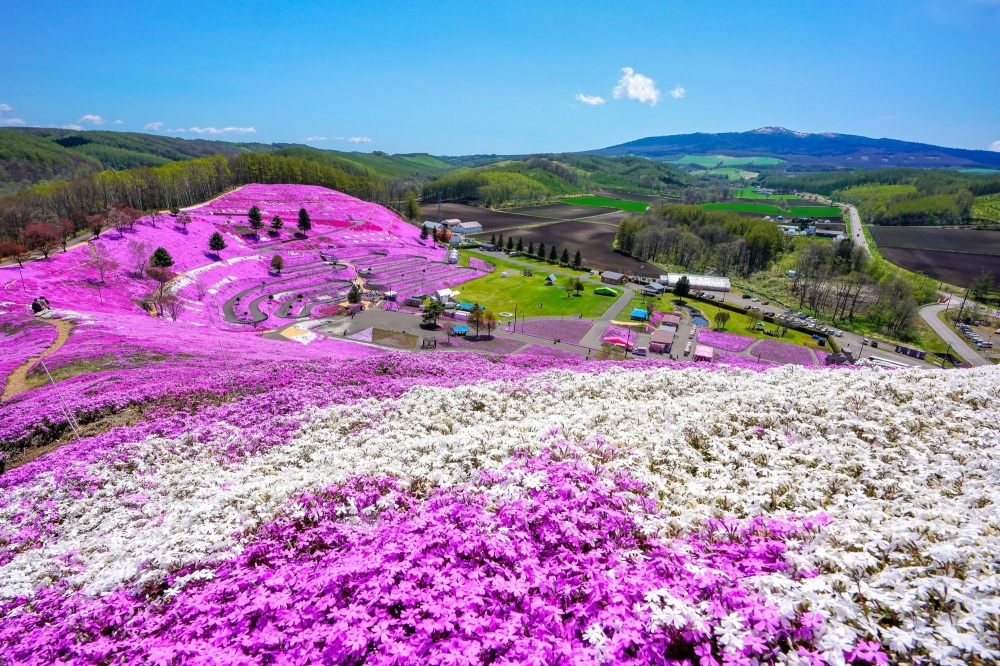
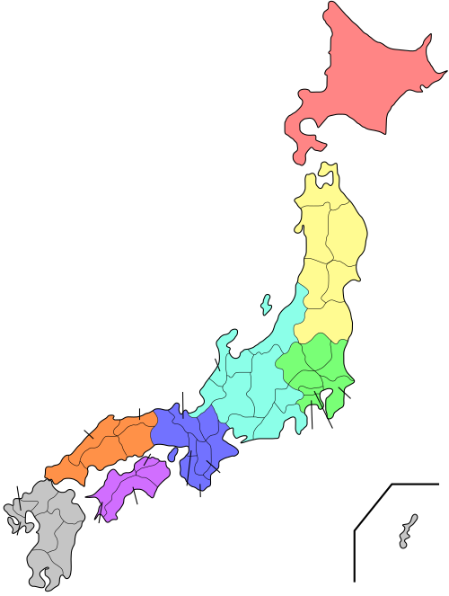
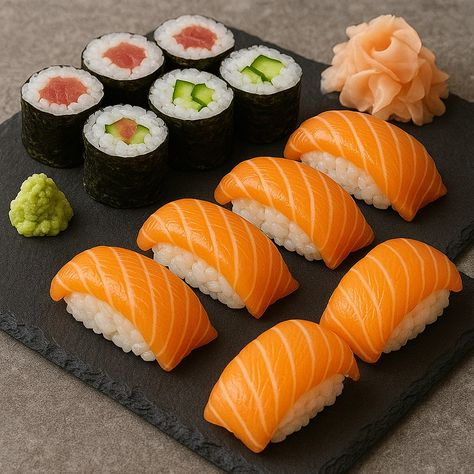
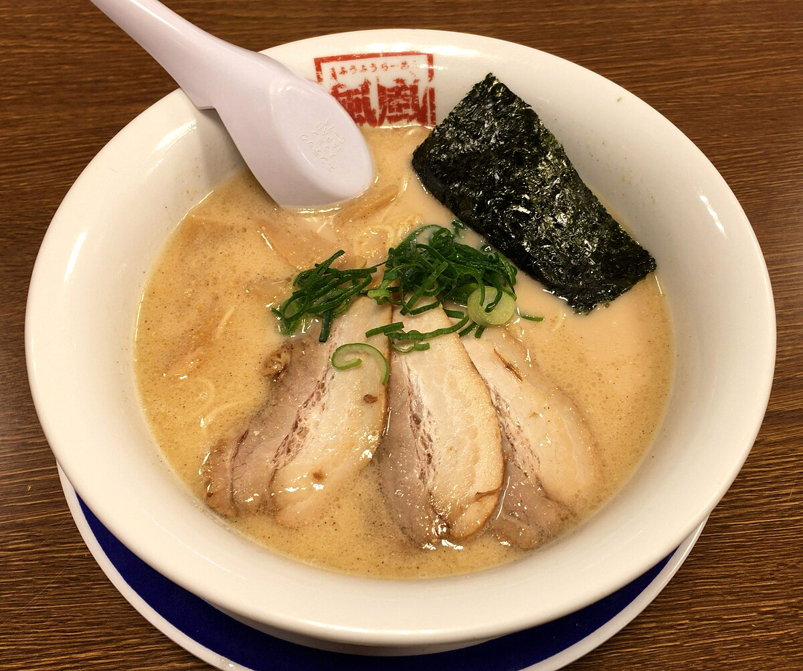

Главная
Япония интересна тем, что в ней можно увидеть и старинную культуру, и современные технологии. Многие люди интересуются этой страной из-за её истории, кухни, аниме, храмов и красивых городов.
Что есть на сайте
- культура и традиции;
- города и достопримечательности;
- современная Япония;
- национальная кухня;
- советы для путешествий.
Почему Япония вызывает интерес
Япония известна своей вежливостью, красивой природой, храмами, необычной культурой и высоким уровнем технологий. Именно поэтому она интересна многим людям по всему миру.
Галерея

Храм
СакураКультура и традиции
Культура Японии складывалась очень долго. Для неё важны уважение к старшим, порядок, традиции, праздники и бережное отношение к природе.
История
История Японии включает древний период, эпоху самураев, период изоляции и постепенный переход к современной жизни.
Несмотря на развитие технологий, японцы сохраняют интерес к своей истории и традициям.
Религия
В Японии распространены синтоизм и буддизм. Эти религии повлияли на праздники, традиции, архитектуру и отношение к миру.
Праздники
В Японии проходят разные фестивали. Один из самых известных периодов — цветение сакуры, когда люди собираются в парках и любуются деревьями.
Искусство
Японское искусство включает каллиграфию, икебану, театр Но и Кабуки, а также традиционные сады и архитектуру.
Традиции
К традициям Японии относятся чайная церемония, ношение кимоно на праздниках и уважительное поведение в обществе.
Города и достопримечательности
В Японии есть как очень современные города, так и места, где хорошо сохранились старые традиции.

Токио
Столица Японии и один из крупнейших городов мира.

Киото
Город храмов, садов и традиционной культуры.
Осака
Крупный город, известный своей едой и активной жизнью.

Нара
Исторический город, известный храмами и парком с оленями.

Хоккайдо
Регион, известный природой, снегом и красивыми пейзажами.
Фудзи
Одна из самых известных гор Японии.

Известные места
- гора Фудзи;
- храм Киёмидзу-дэра;
- район Сибуя;
- замок Химэдзи;
- святилище Ицукусима.
Современность
Современная Япония известна технологиями, транспортом, аниме, мангой и городской культурой.
Аниме и манга
Японская анимация и комиксы известны по всему миру и являются важной частью современной культуры.
Мода
Молодёжная мода в Японии отличается разнообразием и необычными стилями.
Технологии
Япония известна робототехникой, транспортом и высоким уровнем технического развития.
Мини-квиз
Кухня
Японская кухня известна аккуратной подачей и разнообразием блюд.
Суши
Одно из самых известных японских блюд.
Рамен
Популярное горячее блюдо с лапшой и бульоном.
Темпура
Овощи или морепродукты в лёгкой обжарке.
Традиции питания
В Японии важно не только само блюдо, но и его внешний вид, аккуратность и подача.
Этикет
При еде палочками нужно соблюдать аккуратность и уважение к традициям.
Изображения кухни

Суши
РаменПутешествия
Япония интересна для туристов благодаря своим городам, храмам, природе и культуре.
Полезная информация
| Тема | Описание |
|---|---|
| Лучшее время | Весна и осень считаются удобными сезонами для поездки. |
| Транспорт | В Японии удобно пользоваться поездами и метро. |
| Поведение | Важно соблюдать вежливость и правила поведения в общественных местах. |
| Маршрут | Для первого знакомства часто выбирают Токио, Киото и Осаку. |
Короткая поездка
За несколько дней можно познакомиться с одним-двумя городами и увидеть основные достопримечательности.
Более длинная поездка
За 5–7 дней можно лучше узнать страну и посетить несколько разных регионов.